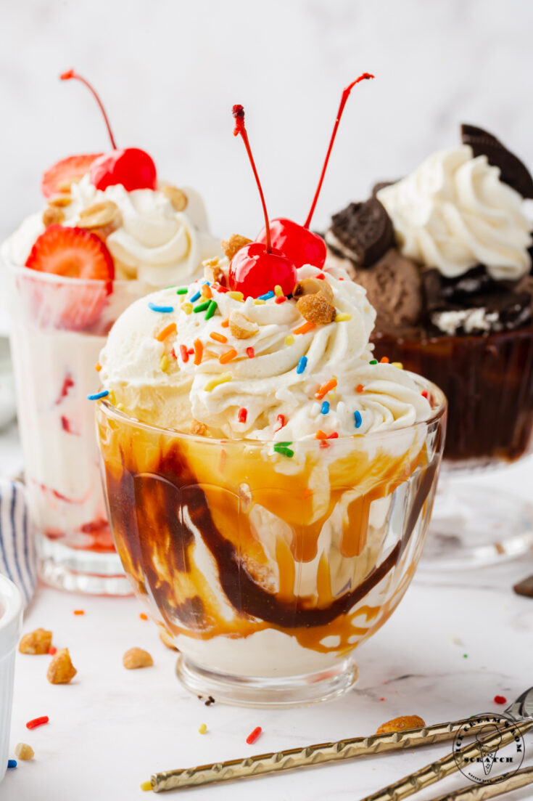

ABOUT US
The Concept
The one confusion that every ice cream lovers experience is which flavor to choose and can’t I have multiple flavors in one ice cream? These wishes and many more put together made us come up with the concept of Cream stone, which is not just any ice cream parlor but is an ice cream boutique wherein exotic and creamy ice creams flavors are customized to create a long lasting taste buds satisfying experience for our customers. Our unique and propriety menu is one of its kind and caters all tastes and preferences of customers.

Our USP
As much as our customers vouch for our quality and taste of ice creams, the making of an exotic dessert is equally interesting. The ice cream is hand mixed and beat on a frozen cold stone, adding, twisting the ingredients and ice creams in the right proportion to make the right dessert. Though ice creams are mostly preferred to be relished during a drive or walk, for all those who wish to sit back and peacefully satisfy their sweet tooth, we have our cream stone boutiques well designed that gives a warm and calm ambience.

The Best Time For Ice Cream Is ALWAYS
The Beginning
Ice creams are something that can never fade off. Be it any age group, the love for ice creams is something that stays always. Believing on this fact and being ice creams ourselves, the thought of how we could make these cold, mouthwatering desserts even more desirable, laid the foundation of the concept Cream stone. In 2009, Cream stone started its journey as ice cream designers and since then on, there has been no looking back. Cream stone has managed to create its niche, not just in Hyderabad but in various other cities like Bangalore, Chennai, Pune, Vizag, Cochin, Coimbatore, and many more.
The Best Time For Ice Cream Is ALWAYS
The Beginning
Ice creams are something that can never fade off. Be it any age group, the love for ice creams is something that stays always. Believing on this fact and being ice creams ourselves, the thought of how we could make these cold, mouthwatering desserts even more desirable, laid the foundation of the concept Cream stone. In 2009, Cream stone started its journey as ice cream designers and since then on, there has been no looking back. Cream stone has managed to create its niche, not just in Hyderabad but in various other cities like Bangalore, Chennai, Pune, Vizag, Cochin, Coimbatore, and many more.